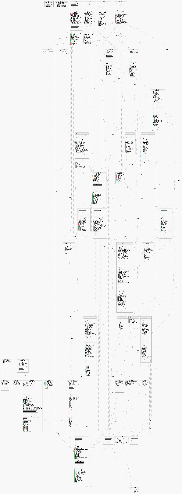

SPECjbb2005, a new Java Business Benchmark |
SPECjbb2005 is a software benchmark product developed by the Standard Performance Evaluation Corporation (SPEC), a non-profit group of computer vendors, system integrators, universities, research organizations, publishers, and consultants. It is designed to measure a system's ability to run Java server applications. SPECjbb2005 is closely based on SPECjbb2000, which was inspired by the TPC-C benchmark and loosely follows the TPC-C specification for its schema, input generation, and operation profile. SPECjbb2005 replaces database tables with Java classes and replaces data records with Java objects. The objects are held in memory as Java Collection instances or other Java data objects.
SPECjbb2005 is implemented as a Java 5.0 application emulating a 3-tier system with emphasis on the middle tier. All three tiers are implemented within the same JVM (though the benchmark may spawn several JVM instances)..
The system modeled is still a wholesale company, with warehouses that serve a number of districts. There are a set of operations that customers (also known as users) initiate, such as placing new orders or requesting the status of an existing order. Additional operations are generated within the company, such as processing orders for delivery, entering customer payments, checking stock levels, and requesting a report on recent activity by a given customer. There is only one user active per warehouse. A warehouse is a unit of stored data. It contains roughly 25 MB of data stored in Java Collection objects. Users map directly to Java threads. Each thread executes operations in sequence, with each operation selected from the operation mix using a probability distribution. As the number of warehouses increases during the full benchmark run, so does the number of threads.
SPECjbb2005 is totally self contained and self driving (generates its own data, generates its own multi-threaded operations, and does not depend on any package beyond the JRE).
SPECjbb2005 is memory resident, performs no I/O to disks, has only local network I/O, and has no think times.
SPECjbb2005 results are not comparable to results for either SPECjbb2000 or TPC-C. Comparisons to either would be a SERIOUS violation of SPEC's run and reporting rules and of TPC's "fair use policy." Violations are subject to penalties.
For details on the design of SPECjbb2000 refer to the SPECjbb2000 design document.
The database is now modeled, not as a BTree structure implemented in code in the benchmark itself, but in structures that are implemented as HashMaps, or TreeMaps in cases where some operations on the table requires sorting. The intention is for the benchmark to reflect the practice of Java developers to use libraries where they provide appropriate functionality, rather than to code implementations of their own.
SPECjbb2005 now includes no System.GC calls in the main part of the benchmark. The intention is to reflect the behavior of long-running applications not interrupted by periodic System.GC calls.
In order to better match current application characteristics, the handling of all financial data and calculations was changed from float to BigDecimal. This matches current industry practice, and ensures that the financial amounts and calculations have correct decimal representation and rounding expected, and sometimes legally mandated, for currency calculations.
The code was refactored in a number of places to better reflect object-oriented styles of programming.
The current Java level is now Java 5.0, and the benchmark includes several features from that language level. Several Collection data structures have been made generic, and the source code contains several uses of auto-boxing and enumeration types.
The transaction logging is now done by building and writing DOM objects using the JAXP XML functionality of Java 5.0.
The benchmark may also deploy several instances of the JRE, each independently handling the transaction load on its own data tables.
The benchmark code is shipped in jar files. In addition, source code is provided in the src subdirectory for reference. Please note section 2.2 of the run rules prohibiting recompilation for published results.
The code contained in the jar files are:
jbb.jar: code related to the major processing activities, and the post_processing of the benchmark;.
check.jar: code for validity checking and verification.
The Java source is found in the /src/spec subdirectory. There are two subdirectories: /jbb and /reporter.
The /reporter subdirectory contains the files for the SPECjbb2005 reporter, which formats the benchmark output into a variety of possible reports.
The /jbb directory has two subdirectories.
The /jbb/validity subdirectory contains files that do some limited checking of the conformance of the JVM to language rules.
The /jbb/infra/Util subdirectory contains code that defines the Transaction Log objects, which are implemented as XML DOM objects.
The /jbb directory itself contains the main benchmark code.
The underlying data structures for the fields in the tables simulating the company database are found in the files Item.java, Stock.java, Customer.java., Address.java.
The database is that for one company, represented by an instance of the class defined in Company.java; it has a varying number of Warehouse objects, as defined in Warehouse.java, and each of these has a number of districts, defined in District.java.
The Company has three major tables of data, the Item table, the CustomerTable, and the CustomerbyLastNameTable. Each Warehouse object has its own StockTable and HistoryTable. Each District has its own OrderTable and NewOrderTable. All the tables are instances of either JBBDataStorage or JBBSortedDataStorage. These latter classes are defined in JBBDataStorage.java, JBBSortedStorage.java, Infrastructure.java, MapStorage.java.
Order.java and NewOrder.java define the order objects representing the orders that drive the transactions.
There are six different types of transactions that are carried out, defined in NewOrderTransaction.java, OrderStatusTransaction.java, DeliveryTransaction.java, PaymentTransaction.java, StockLevelTransaction.java, and CustomerReportTransaction.java.
The main benchmark loop is run by a collection of user threads each running TransactionManager.go(), controlled by a main thread running Company.displayResultTotals. Each user thread is running a while loop carrying out a randomized series of transactions. When there is more than one JVM running in the benchmark there is an initial ramp-up period of 3 seconds, to make sure all threads are running before measurement of the transaction rate begins, and also a ramp-down period of 20 seconds. Measurements are done for 30 seconds for warehouses up to the expected peak, and for four minutes after that.. Each thread collects and writes transaction data for future reference. In a single-JVM run with many warehouses, the start-up time is part of the measurmeent period and erratic results may be seen before the expected peak because of the shorter measurement interval.
Class file diagrams for the various classes in the benchmark can be seen in Appendix A at the end.
SPECjbb2005 has two performance metrics, bops (business operations per second), which is the overall rate at which business operations are performed per second, and bops/JVM, the first metric divided by the number of JVMs running during the benchmark,
The single-JVM metric is calculated as follows.
A "point" represents a measurement period of work done at a given number of warehouses. A full benchmark run consists of a sequence of measurement points with an increasing number of warehouses (and thus an increasing number of threads).
The SPECjbb2005 metrics for a compliant run are calculated as follows:
All points (numbers of warehouses) are run, from 1 up to MaxWh (the number specified by input.ending_number of warehouses in SPECjbb.props) warehouses.. At a minimum all points from 1 to 8 must be run.
For numbers of warehouses from 1 to the expected peak number M of warehouses (the number of warehouses at which the peak is expected to be observed, either specified by a nonzero input.expected_peak_warehouse in SPECjbb.props, or defined as Runtime.getRuntime.availableProcessors() if the property is set to 0 ), there is a 30-second measurement period. For larger numbers of warehouses, the measurement period is four minutes. All JVM instances run these measurement periods together.
The total throughputs of all the instances for all the points from M warehouses to 2*M inclusive warehouses are averaged. This average is the SPECjbb2005 metric 'bops'. As explained in section 2.3 of the run and reporting rules, results from systems that do not run all points up to 2*M warehouses are still considered valid. For all the missing points in the range M+1 to 2*M, the throughput is considered to be 0 bops in the metric computation.
The second SPECjbb2005 metric, bops/JVM is obtained by dividing value of bops for the run by the number of JVM instances used in the run.
The reporting tool contained within SPECjbb2005 produces a graph of the throughput at all the measured points with warehouses on the horizontal axis and throughputs on the vertical axis, totalled, and for each individual JVM. All points from 1 to the maximum of 8 and MaxWh are reported. Missing points in the range M+1 to 2*M will be reported to have a throughput of 0 bops. The points being averaged for the metric will be marked on the report.
While SPECjbb2005 is not a full blown OLTP benchmark, it is a very good stand-in for a large business application. It is also a very good functional and performance test for Java platforms. It has been found to effectively exercise the implementation of the Java Virtual Machine (JVM), Just-in-time compiler (JIT), garbage collection, threads, parts of the Java library, and some aspects of the operating system. The benchmark measures the performance of CPUs, caches, memory hierarchy and the scalability of Shared Memory Processing Systems.

Home - Contact - Site Map - Privacy - About SPEC
webmaster@spec.org Last updated: Fri June 13 11:12:07 EDT 2005 Copyright © 1995 - 2005 Standard Performance Evaluation Corporation URL: http://www.spec.org/jbb2005/docs/WhitePaper.html